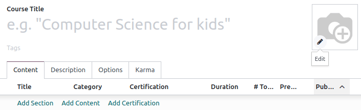
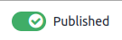

eLearning¶
La aplicación eLearning le permite cargar fácilmente contenidos, definir objetivos de aprendizaje, gestionar a los asistentes, evaluar el progreso de los alumnos e incluso establecer recompensas. Involucrar a los participantes en una experiencia de aprendizaje significativa mejora su atención y fomenta una mayor productividad.
Importante
Puede gestionar su contenido de eLearning en el frontend o en el backend. El frontend le permite crear contenido rápidamente desde su sitio web, mientras que el backend ofrece opciones adicionales y permite la colaboración. Esta documentación se centra en el uso del backend para crear su contenido.
Ver también
Cursos¶
Puede obtener una visión general de todos sus cursos en .
Haga clic en el título de un curso para editar su curso en el backend. Haga clic en Ver curso para acceder a su curso en el frontend.
Creación de curso¶
Haga clic en Nuevo para crear un nuevo curso. Cuando aparezca la página, puede añadir su Título del curso y una o más Etiquetas para describir su curso. Puede añadir una imagen para ilustrar su curso pasando el ratón por encima de la imagen de la cámara y haciendo clic en el icono de edición. Si desea seguir editando su curso, puede usar las pestañas Contenido, Descripción, Opciones, y Recompensas.
Pestaña de contenido¶
Esta pestaña le permite gestionar el contenido de su curso. Haga clic en Agregar sección para dividir su curso en diferentes secciones. Haga clic en Agregar contenido para crear contenido. Haga clic en Agregar certificación para evaluar el nivel de comprensión de sus asistentes, certificar sus habilidades y motivarlos. Las certificaciones forman parte de la aplicación Encuestas.
Pestaña de descripción¶
Puede añadir una breve descripción o información relacionada con su curso en la pestaña Descripción. Aparecerá debajo del título de su curso en su sitio web.

Pestaña de opciones¶
En la pestaña Opciones, hay diferentes configuraciones disponibles: Curso, Comunicación, Derechos de acceso, y Mostrar.

Curso¶
Asigne un usuario responsable para su curso. Si tiene varios sitios web, utilice el campo Sitio web para mostrar el curso únicamente en el sitio web seleccionado.
Comunicación¶
Permitir reseñas: marque la casilla para permitir que los asistentes den «me gusta», comenten su contenido y envíen reseñas sobre su curso.
Foro: añade un foro dedicado a tu curso (solo se muestra si la función Foro está activada en la configuración de la aplicación).
Notificación de nuevo contenido: seleccione una plantilla de correo electrónico que se enviará a sus asistentes cuando cargue nuevo contenido. Haga clic en el botón de enlace interno (➜) para acceder al editor de plantillas de correo electrónico.
Notificación de completado: seleccione una plantilla de correo electrónico que se enviará a sus asistentes una vez que terminen su curso. Haga clic en el botón de enlace interno (➜) para acceder al editor de plantillas de correo electrónico.
Permisos de acceso¶
Mostrar curso a: defina quién puede acceder a su curso y su contenido: Todos, Registrados o Asistentes del curso;
Política de inscripción: defina cómo se inscriben las personas en su curso. Seleccione:
Abierto: si desea que cualquier persona pueda ver su curso.
Por invitación: si desea que solo las personas que han recibido una invitación puedan inscribirse a su curso. Si selecciona esta opción, establezca el Mensaje de inscripción que explica el proceso de inscripción al curso. Este mensaje aparecerá en su sitio web debajo del título del curso.
En el momento del pago: así solo podrán asistir a su curso las personas que lo hayan comprado. La función Cursos de pago debe estar activada para obtener esta opción. Si selecciona En el momento del pago, debe añadir un Producto para su curso.
Nota
Solo se muestran los productos del Curso definidos como Tipo de producto.
Mostrar en pantalla¶
Capacitación: el contenido del curso aparece como un programa de capacitación, y se deben hacer los cursos en el orden propuesto.
Documentación: el contenido está disponible en cualquier orden. Si elige esta opción, puede elegir qué página debe promocionarse en la página de inicio del curso utilizando el campo Contenido destacado.
Pestaña de recompensas¶
En esta pestaña podrá hacer sus cursos de eLearning divertidos e interactivos gracias a las opciones de ludificación.
En la sección Recompensas, elija cuántos puntos de karma desea otorgar a sus alumnos cuando revisen o terminen un curso.
Defina el karma necesario para Agregar reseña, Agregar comentario o Votar sobre el curso en la sección Derechos de acceso.
Nota
Desde su curso, haga clic en el botón Contactar a los asistentes para comunicarse con las personas inscritas en el curso.
Grupos del curso¶
Utilice los Grupos del curso para informar a los usuarios y permitirles filtrar los cursos desde el tablero Todos los cursos.
Puede gestionarlos accediendo a . Haga clic en Nuevo para crear un nuevo grupo. Añada el Nombre del grupo del curso, marque la casilla Entrada de menú para permitir a los usuarios buscar por grupo de cursos en el sitio web, y añada etiquetas en la columna Nombre de la etiqueta. Puede personalizar colores para cada etiqueta.
Ajustes¶
Puede activar diferentes funciones para personalizar sus cursos yendo a :
Certificaciones: para evaluar los conocimientos de sus asistentes y certificar su conocimiento.
Cursos de pago: para vender el acceso a sus cursos en su sitio web y llevar un seguimiento de los ingresos.
Envíos masivos: para mantener al día a todos sus asistentes mediante envíos masivos;
Foro: para crear una comunidad y permitir que los asistentes respondan a las preguntas de los demás.
Contenido¶
Gestione su contenido en . Haga clic en Nuevo para crear contenido. Añada su Título del contenido y, si lo desea, etiquetas, luego complete la información necesaria en las diferentes pestañas.

Pestaña de documentos¶
Curso: seleccione el curso al que pertenece su contenido.
Tipo de contenido: seleccione el tipo de su contenido.
Responsable: añada un responsable para su contenido.
Duración: indique el tiempo necesario para completar el curso.
Permitir descarga: permite a los usuarios descargar el contenido de la diapositiva. Esta opción solo es visible cuando el contenido es un documento.
Permitir vista previa: cualquier persona puede ver el curso.
# de vistas públicas: muestra el número de visualizaciones de participantes no inscritos.
# vistas totales: muestra el número total de vistas (participantes inscritos y no inscritos).
Pestaña de descripción¶
Puede agregar una descripción de su contenido para que aparezca en la sección Acerca de en el frontend del contenido de su curso.
Pestaña de recursos adicionales¶
Haga clic en Agregar una línea para agregar un enlace o un archivo que sea útil para el aprendizaje de sus participantes. Aparece en el contenido del curso de su sitio web.

Pestaña de prueba¶
Desde esta pestaña puede crear una prueba para evaluar a sus estudiantes al final del curso.
La sección Puntos de recompensa le permite otorgar un número específico de puntos de karma según el número de intentos necesarios para que respondan correctamente la pregunta. Cree sus preguntas y las posibles respuestas al hacer clic en Agregar una línea. Aparecerá una nueva ventana, agregue la pregunta en el campo nombre de la pregunta y varias respuestas al hacer clic en Agregar una línea. Seleccione la casilla Es la respuesta correcta para seleccionar una respuesta como correcta. También puede completar el campo Comentario para mostrar información adicional cuando el participante elige esa respuesta.
Publicar su contenido¶
Debe publicar desde el frontend todo lo que crea en el backend. El contenido que no está publicado siempre es visible desde su sitio web, pero aún debe publicarlo para estar disponible para su audiencia.
Debe estar en el frontend de su sitio web para publicar contenido. Para ello, haga clic en el botón inteligente Ir al sitio web y marque la opción Publicar que se encuentra en la esquina derecha.
